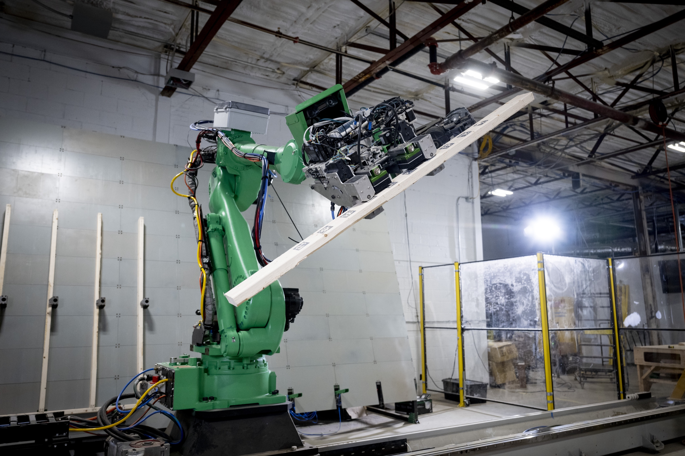
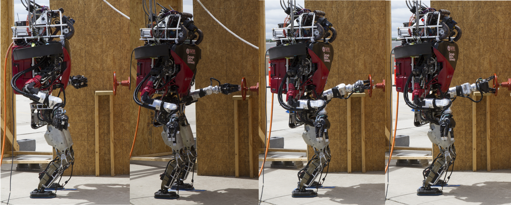

The U.S. needs millions of new homes. Building them the old way is too slow, too expensive, and too carbon-intensive. I co-founded Reframe Systems to prove that robotics and software can change that equation.
Reframe Systems
Reframe Systems, Feb 2023 — Present
I co-founded Reframe with Vikas Enti (CEO) and Aaron Small (Head of Operations and Digital AI). I lead Manufacturing, Software, and Robotics, building the full technology stack that powers our microfactory system from the ground up.
Our software-defined, highly automated microfactories produce net-zero homes faster, cheaper, and with a fraction of the carbon of traditional construction. Each microfactory is a compact 50,000 sq ft facility that can launch in roughly 100 days and produce about 500 homes per year, putting manufacturing capacity directly into the communities that need it.
In the Press
Previously
Senior Robotics System Developer Engineer
Amazon Robotics, Aug 2016 — Jan 2023
Technical Lead for the Sparrow Program, Amazon Robotics' flagship item manipulation system. I built vision-based robotic solutions for singulation, dense packing, item identification, and damage detection, deployed across hundreds of thousands of robotic units in Amazon's fulfillment network.
Senior Robotics Engineer — Humanoid Manipulation
WPI-CMU DARPA Robotics Challenge Team, Dec 2013 — Jun 2015
Manipulation Lead for the WPI-CMU team in the DARPA Robotics Challenge. I led full-body motion planning for the 30-DoF Boston Dynamics Atlas humanoid robot, coordinating a team of graduate and undergraduate students through the DRC Trials and Finals.

Senior Robotics Software Engineer
Dynamic Legged Systems Lab — Italian Institute of Technology, Jul 2015 — Jul 2016
Built the software architecture for the HyQ and HyQ2Max quadruped robots, integrating real-time controllers, state estimation, and simulation on Xenomai Linux.
Education
Patents — 17 Granted US Patents
All patents issued while at Amazon Robotics, covering robotic grasping, end-of-arm tooling, manipulation systems, and safety. View all on Google Patents
Robotic Grasping & End-of-Arm Tools
Manipulation Systems & Robotics Infrastructure
Safety & Calibration
Publications
Team WPI-CMU: achieving reliable humanoid behavior in the DARPA Robotics Challenge
Get in touch
Interested in Reframe Systems, robotics, or just want to connect? Reach me at felipe.polido@gmail.com or find me on LinkedIn.